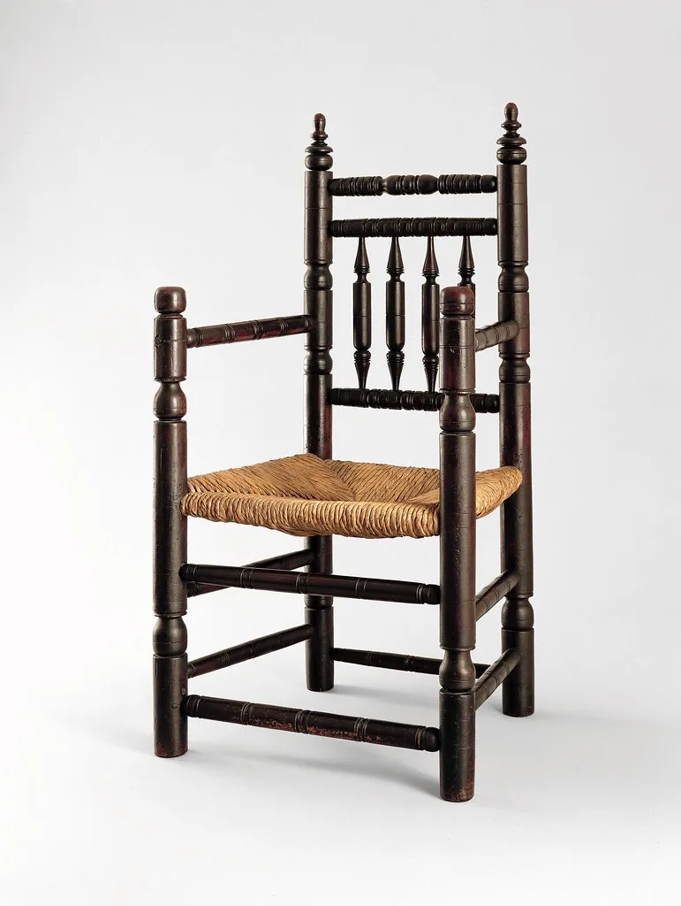
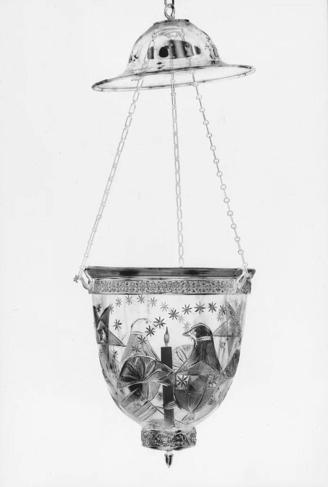
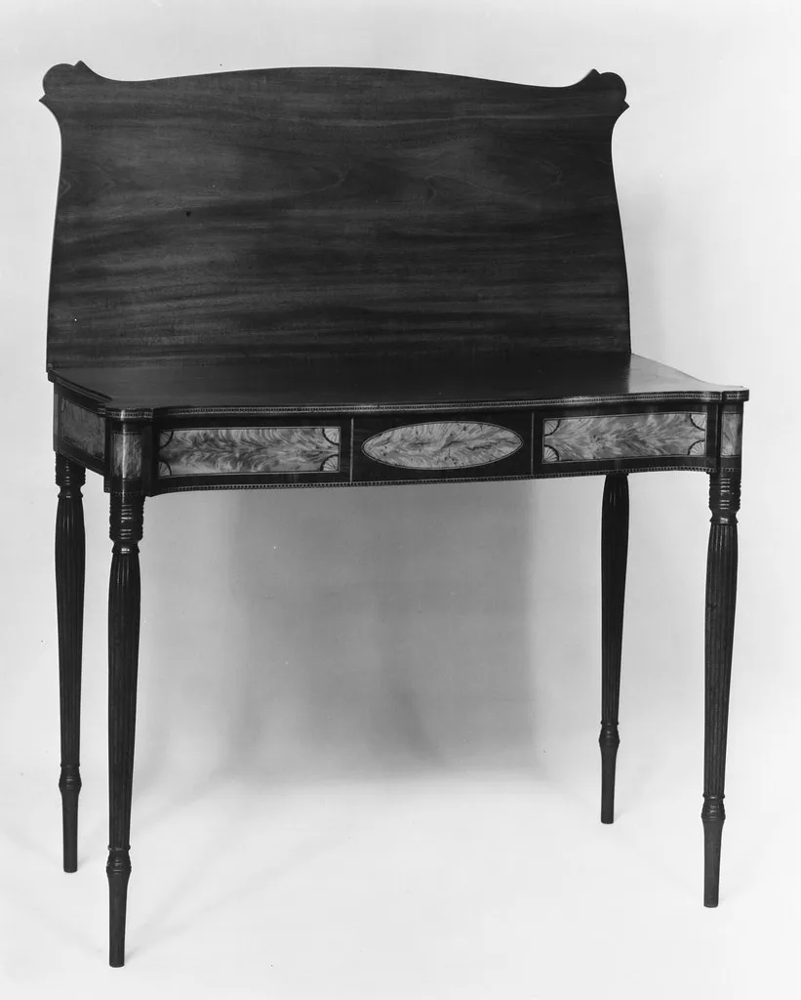
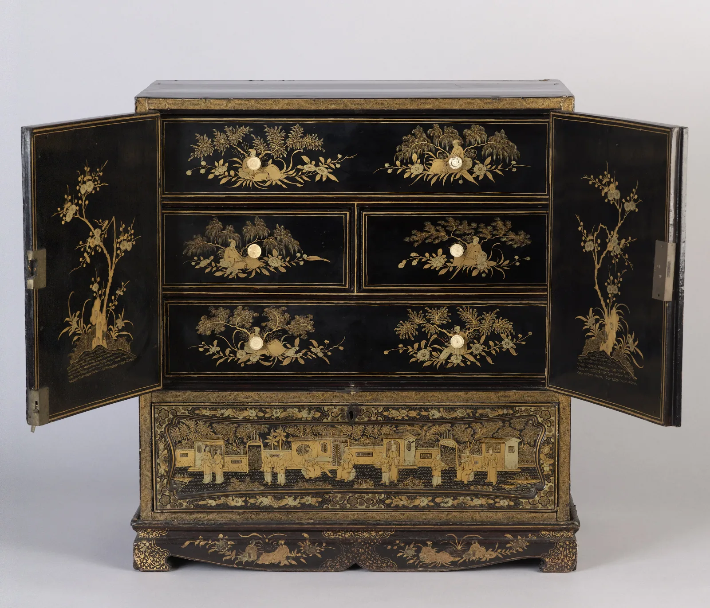
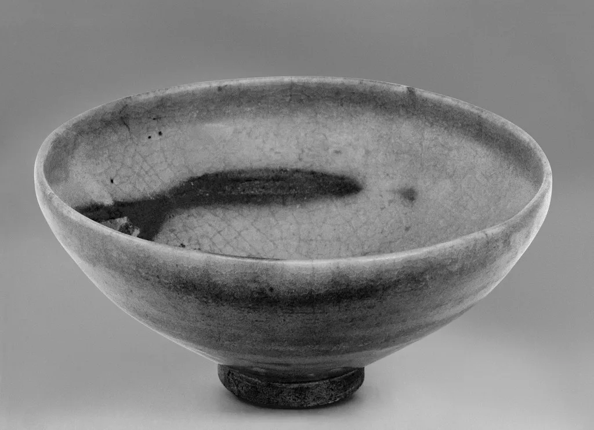
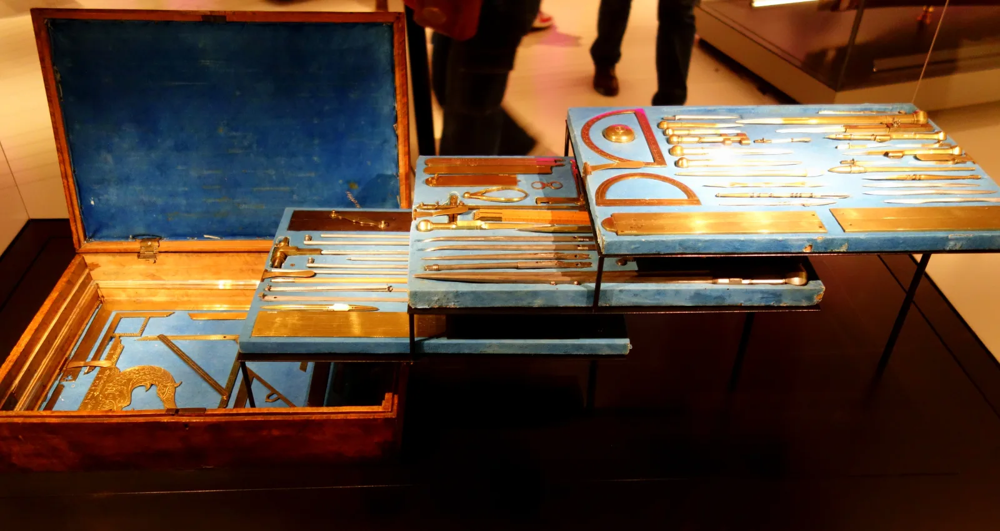

운영중 서리 의자 물푸레나무라탄 등받이를 한 장으로 굽혀 이음새를 두 곳으로 줄였습니다.
운영중 낮은 조명 〈결〉 황동한지 벽에 빛이 결처럼 번지도록 갓을 여섯 번 접었습니다.
완료 접이 테이블 02 자작나무 합판 혼자서 20초면 접히도록 경첩을 새로 짰습니다.
완료 겹 수납장 오크스틸 문을 겹쳐서 폭 40cm에 세 칸을 넣었습니다.
운영중 무광 도자 시리즈 석기토무유 손이 닿는 면만 남기고 유약을 걷어냈습니다.
완료 책상 위 도구 세트 알루미늄가죽 자주 쓰는 다섯 가지를 트레이 하나에 모았습니다.